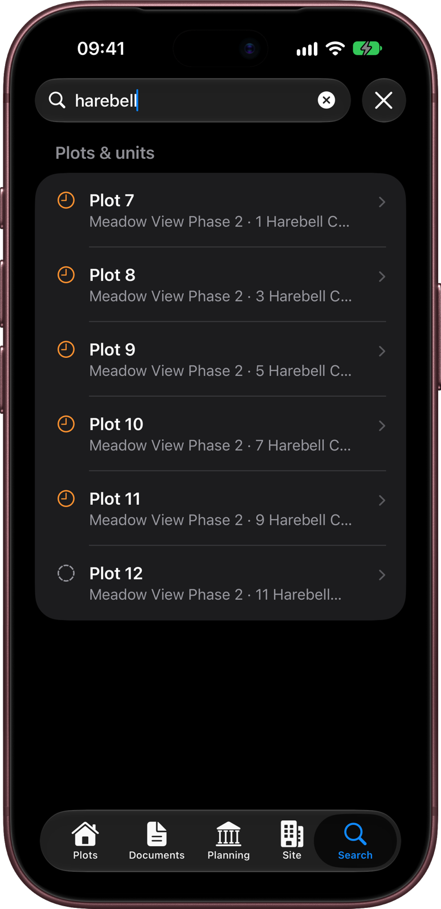
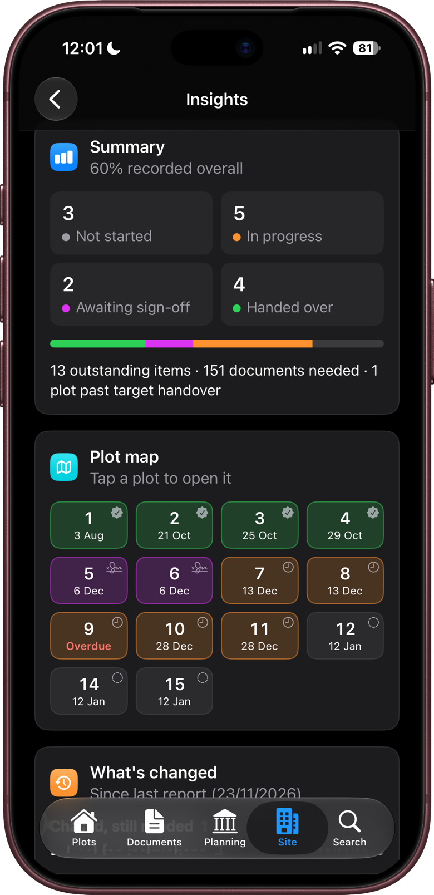

On a big site, the question is usually "which plot was that?" or "what's still missing?". This chapter covers the ways KeyCheck helps you find things: search, sorting and filtering the plot list, Insights and the plot map, and the projects map with its weather badge.
Searching a project
Open a project and tap the Search tab (the magnifying glass, far right of the tab bar). Type in Search this project.
You can find plots by number or address, and by almost anything recorded on them:
- the plot number, postal number, postcode, tenure, house type, property type and block
- meter readings, serial numbers, MPANs and suppliers, and the reason a meter wasn't fitted
- keys added on that plot, suite keys and keyed alike sets
- final snags and who's fixing them
- notes, document notes and the names on signatures
Communal keys and meters are searched too, by name, location, who they were handed to, readings and notes. So are site contacts (name, role, company, phone numbers, email and note), the text on the Site details screen (site hours, access, parking, site notes and the contract details) and project log entries.
Results are grouped under Plots & units, Communal keys, Communal meters, Site contacts, Site details and Project log, with the best matches first. Each result says why it matched, for example "Electricity: Meter serial number". Tap a plot to open it, or a communal key or meter to go to the Site tab. A contact or site details result opens Site details, and a log entry opens the Project log.

Search tips
- Every word has to match, so add words to narrow it down: "Harebell rent" finds Rent plots on Harebell Close.
- Capitals, accents and spaces don't matter. "st174qh" finds ST17 4QH.
- Search by status: type "handed over", "in progress", "not started" or "awaiting sign off" (or just "ready").
- Small words such as "show", "find", "all" and "plots" are ignored, so "show all plots awaiting sign off" works too.
- A single letter or number only matches the start of a word, so "7" finds Plot 7 but not Plot 17.
Searching all your projects
On the Projects screen, tap the search button at the bottom and type in Search all projects. It searches every project in the same way, including archived ones, and also finds projects by name, client, contractor, site address and postcode. Tap a plot in the results to open it in its project.
KeyCheck keeps your search when you open a result, so you can go back and try the next one.
Sorting and filtering the plot list
On the Plots tab:
- Filter by status: tap one of the four tiles at the top (Not started, Handed over, Awaiting sign-off or In progress) to show only those plots. The line underneath says "Showing … only". Tap the tile again to show every plot.
- Sort: tap the menu beside the number of plots, for example Plot number, and choose Plot number, Status (least finished first) or Handover date (earliest first). Handover date uses the target date until a plot is handed over, and plots with no date go last. KeyCheck remembers your choice.
- Group by street: in the same menu, when the site has more than one street. Each street gets a heading with how many plots are on it.
On the Mac, the plots are a table: click a column heading to sort by it, and use the filter button in the header to show one status. Type in the search field at the top of the table (⌘F) to find a plot by number, address or postcode. Right-click a column heading to show or hide columns, such as Keys, Meters and Docs Missing.
Insights
Insights is an overview of the whole site on one screen: how far along it is, what's changed recently and which documents are still needed. Open it from the Site tab (the first card), or touch and hold the "4 of 14 handed over" summary at the top of the Plots tab and choose Insights. On the Mac, it's on the Site page, or choose Project → Insights.
Insights has these parts, from the top:
- Summary: how many plots are not started, in progress, awaiting sign-off and handed over, with a bar showing the mix. Underneath is a line such as "13 outstanding items (2 overdue) · 150 documents needed · 2 plots past target handover".
- Plot map: every plot as a coloured tile (see below).
- What's changed: plots handed over, documents received, documents chased and still needed, and outstanding items completed, since the last progress report (or in the last 14 days, if you haven't made one yet). Each list shows five lines, then "and 3 more".
- Progress by block and Progress by street: a bar for each, on sites with more than one.
- Document progress: for plots not yet handed over, a bar for each document showing how many have been received, and which plots are still waiting, for example "Still needed: Plots 1–3, 5 · waiting since 21/10/2026 (17 days)". Documents nobody has ticked off count as still needed.
- Project documents still needed: the site-wide documents still to come. Tap Copy to copy the list, ready to paste into an email.

The plot map
The plot map isn't a street map. It's a grid with a tile for each plot, coloured by status: grey for not started, orange for in progress, purple for awaiting sign-off and green for handed over. The Summary tiles above it are the key.
Each tile shows the plot number and its handover date, or its target date until it's handed over. A plot past its target shows Overdue in red. Tap a tile to open the plot.
Insights is a quick check before a phone call or meeting. Document progress shows which certificate is holding up the most plots, and the Copy button turns the project documents still needed into a list for an email to the contractor. For the full picture to hand round at a meeting, use the progress report (chapter 11).
The projects map and weather
At the top of the Projects screen, a map shows where your projects are. A project appears once its Site address and Postcode are filled in (in Project settings → Project details), and KeyCheck can find them on the map. Projects close together are grouped into a numbered circle; tap it to zoom in. Archived projects aren't shown.
- Tap the location button (top left) to centre the map on where you are.
- Tap i (top right) to see how many projects are on the map, and why any are missing.
The badge at the bottom right shows the current weather and temperature where you are, from Apple Weather, which is handy before heading out to site. It needs permission to use your location; without it, the badge says Weather unavailable. Your location is only used for the map and the weather.
On the Mac, choose All Projects at the top of the sidebar (⌘0) for the same map, totals for all your projects, and a table of projects you can sort by clicking a column heading.
Sorting and archiving projects
- Sort the Projects list: tap More (…) → Sort by, and choose Newest first, Oldest first, Name A–Z, Name Z–A or Progress. On the Mac, choose View → Sort Projects By.
- Archived projects are kept in a folded Archived section at the bottom of the list. Tap it to show them. They're left out of the map and the totals at the top, but still turn up in search.